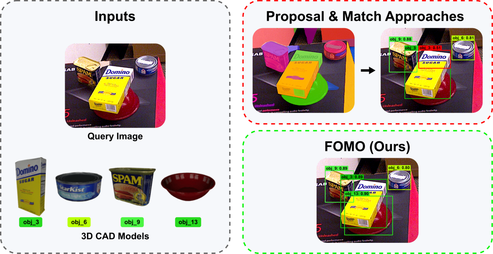
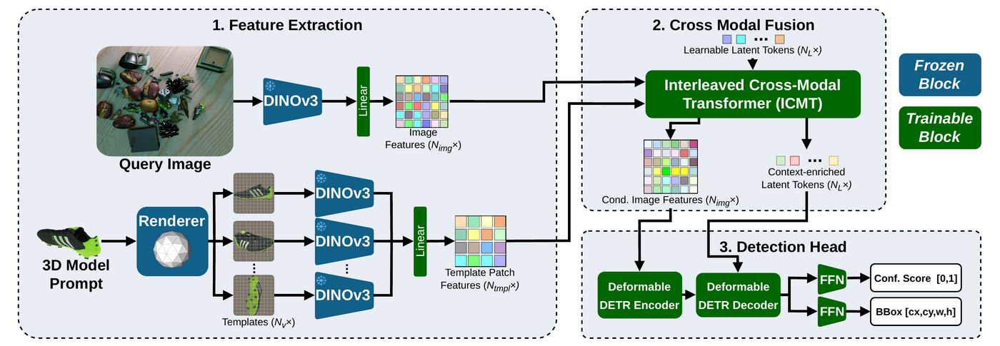
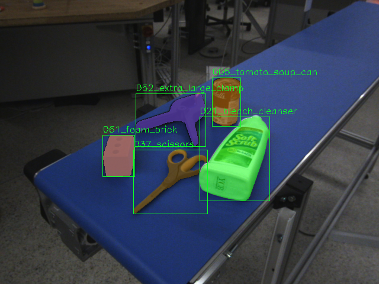
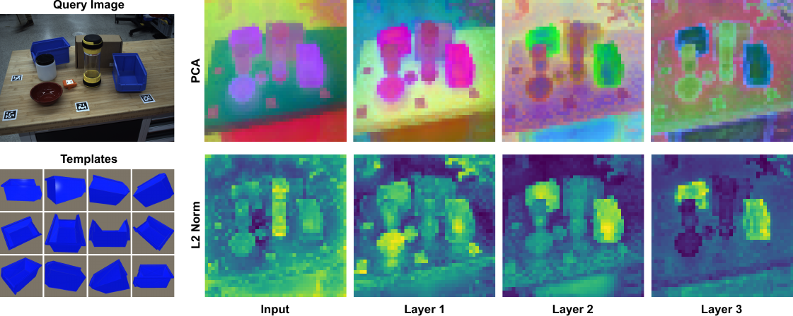
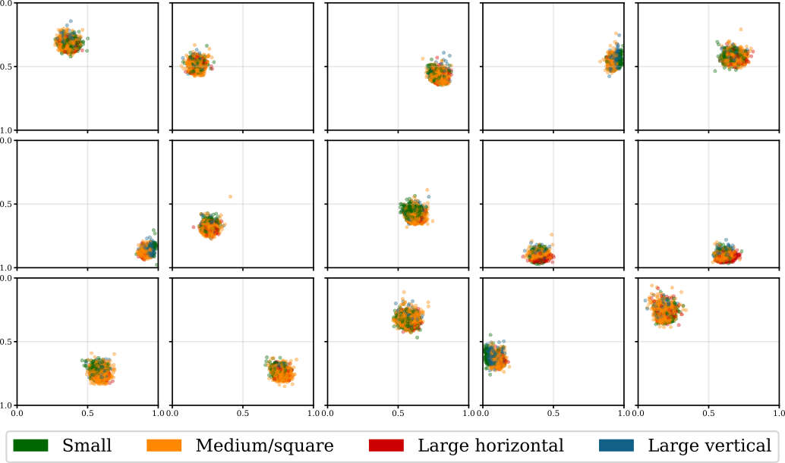

FOMO





Overview
FOMO (Fear Of Memorizing Objects) tackles zero-shot object detection: finding and localizing objects in an image when the only thing available is a CAD model of the target, with no training images of that specific object. This setup matters in robotics and industrial settings where new parts and products show up constantly, and collecting and labeling training data for every one of them is impractical.
Most prior approaches split the problem into two loosely coupled stages: first generate class-agnostic region proposals, then match each proposal against features rendered from the CAD template. This "proposal-and-match" pipeline is brittle in practice — proposals get fragmented or merged in cluttered, multi-instance scenes, and once a proposal is wrong there is no way for the later matching stage to recover.
FOMO instead is trained end-to-end as a single-stage detector that injects CAD template information directly into the detection process, rather than bolting it on afterward. At its core is a novel Interleaved Cross-Modal Transformer (ICMT), in which learnable latent tokens alternate between attending to multi-view CAD renders of the target object and to the query-image features. This produces object-aware image features and conditioned queries that are decoded directly into bounding boxes with confidence scores.
Key Highlights
- Introduces the Interleaved Cross-Modal Transformer (ICMT), which fuses multi-view CAD template information into image features and detection queries early in the pipeline, replacing the frozen proposal-and-match approach with a single end-to-end trainable architecture
- Built Clutter6D, a new large-scale synthetic dataset with over 500,000 images across more than 10,000 diverse CAD object models, rendered with BlenderProc in densely cluttered, multi-instance scenes with varying occlusion levels for sim-to-real transfer
- Achieves 54.2 mean AP on the BOP-Classic-Core benchmark at 0.23 seconds per query image, ranking 2nd overall — within 3.8 points of the top-performing method while running more than 7x faster
- Includes detailed ablations on architectural design choices, zero-shot generalization, and the influence of CAD model quality on detection performance